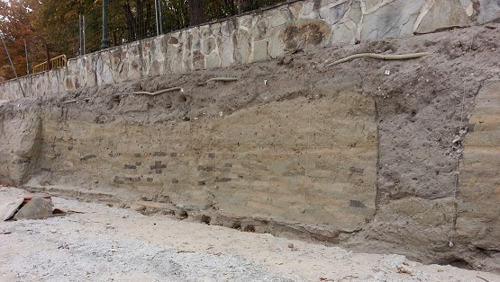
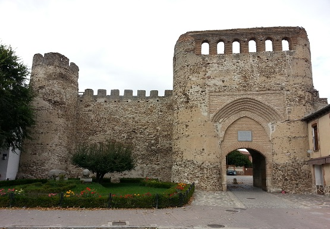
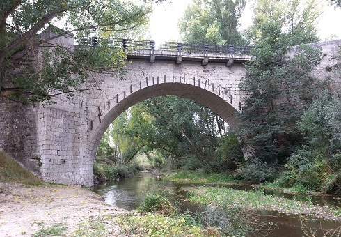
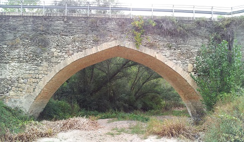
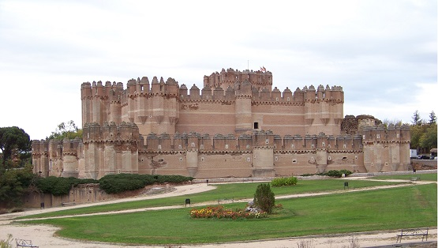

|
COCA
 Objetivo militar para los romanos
en la conquista de Hispania. En 151 a.e.c la ciudad fue traicionada y
saqueada por L. Licinio Lúculo y en el 134 a.e.c, P. Cornelio Escipión
trata de ganarse a los caucenses para que no ayuden a los Numantinos. En
el 74 a.e.c., es de nuevo destruida por C. Pompeyo Magno en la guerra
civil.
De época medieval destaca la muralla medieval y puerta de la Villa. Se conserva un lienzo de muralla de unos 200 metros de longitud, con cuatro torres, parapeto almenado y la puerta de entrada llamada puerta de la Villa. Datan del siglo XII o XIII.
 El puente Grande, construido en 1630 sobre el río Eresma. De un solo ojo con arco de medio punto, construido en sillares de piedra caliza. Levantado posiblemente sobre restos de otro romano que comunicaba ambas orillas urbanizadas, siendo la bajada de El Atajo por donde estaría trazada la calzada.
 El puente Chico, levantado sobre el río Voltoya. De época medieval con sucesivas reconstrucciones. Se cree que por el puente, o sus proximidades, atravesara la calzada romana que enlazaba Coca con Simancas (Septimanca).
 El castillo de Coca, considerado
como una de las muestras más hermosas del arte gótico-mudéjar. El
Castillo de los Fonseca.
 Más info de la
ciudad:
http://www.descubrecoca.com
|